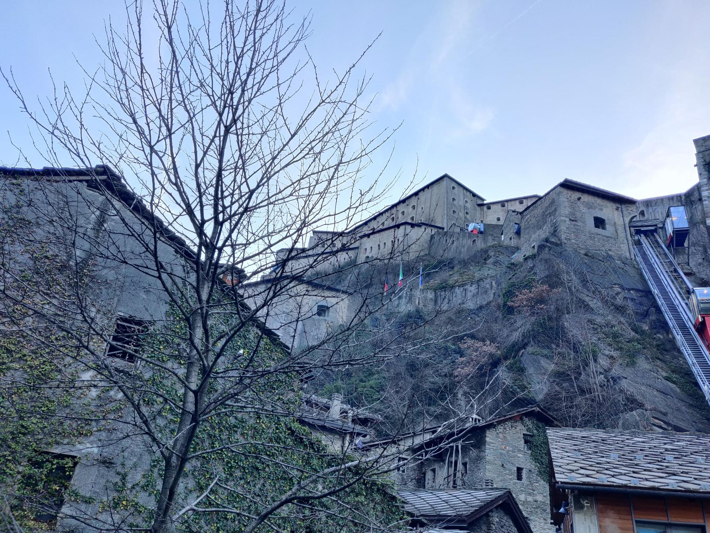
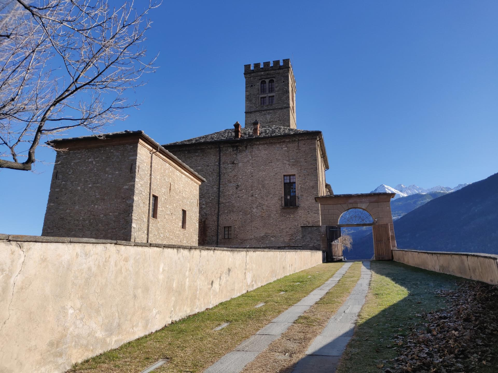
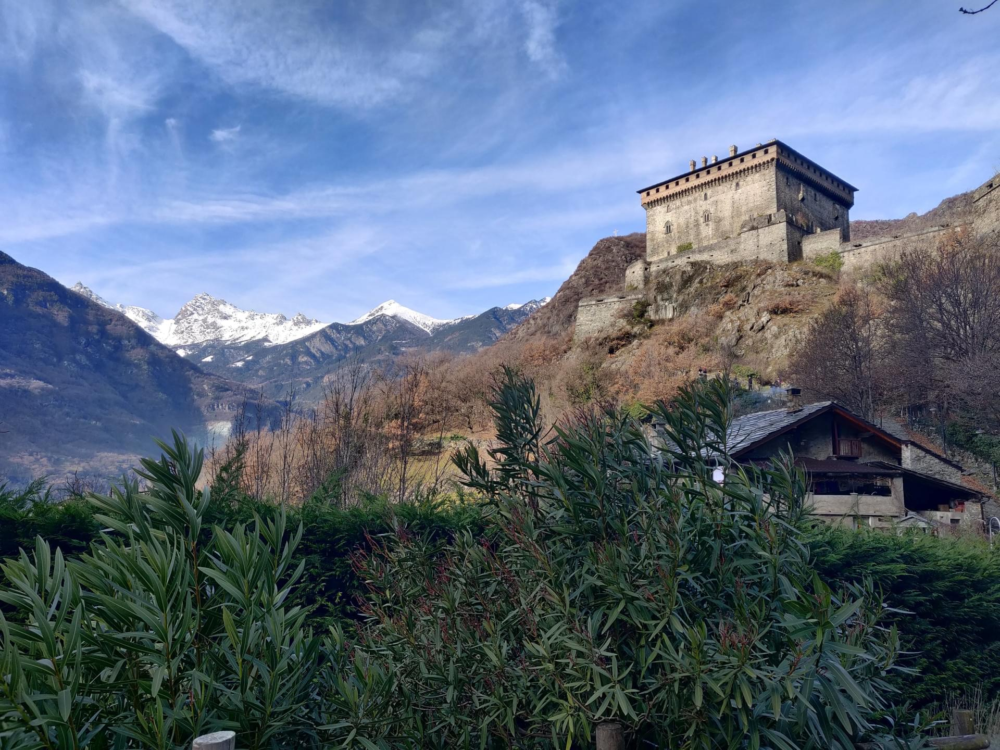
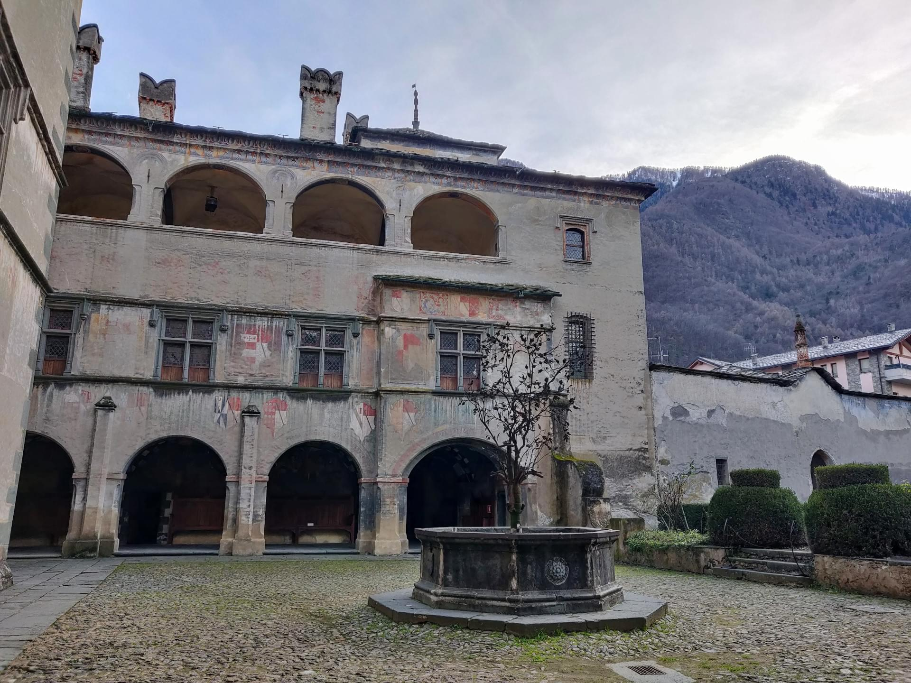

Valle D’Aosta is well known, at least to those of you who like skiing. For the others, this article could be interesting.
Valle D’Aosta is a region in northern Italy, surrounded by the alps. I visited it for new years eve, having the pleasure to see such majestic mountains full of snow as never before in my life. It’s definitely an experience. However this region is also known as the valley of the hundred castles.
There is literally a castle on every rock
Sadly there wasn’t enough time to visit them all, but we managed to stop by the most important ones.
Forte di Bard
Bard is the first step when you arrive in Valle D’aosta. The fort stands on a rock and is well surrounded by high walls, which make a massive impression. The entrance ticket is quite expensive for what you can see inside. With the combined ticket you get to enter the Museum of the Alps and the prison of the Fort. Sadly those museums didn’t catch my interest, but
They could be particularly interesting for kids and enthusiasts
Without paying any ticket you can take the elevators up to the fort and walk outside. The streets are very well made and wide. You can easily walk down, without using the elevators, in order to see the small and fascinating village at the feet of the rock.

Castello di Fenis
Fenis’ castle is the most intact medieval castle in Italy. You can buy a ticket for a fair price, just be sure to be in line when it opens because only guided visits are possible. If you are sure about your schedule you can, and I suggest you to, take the ticket online with just 1 euro of reservation fee so you can jump the line and select the time slot.
After having solved this… the castle is beautiful.
You can see preserved frescos and the original fireplaces. From the castle you can also easily reach the town walking, and there are few valdostano restaurants positively rated on Google Maps.

Castello di Sarre
If you are strongly vegetarian, vegan or just don’t like to see hunting trophies, you must not cross the door of the Sarre’s Castle or, probably, even read my description.
This castle became the hunting mansion of Vittorio Emanuele II, the first king of Italy and “Roi Chasseur” (the Hunter King). His son Umberto I is, although, the one who renovated and decorated the halls with the uncountable horns of chamois and steinbock. It’s terribly fascinating how they managed to create something balanced and beautiful between delicate floral frescos and hunting trophies.
It’s a castle with a strong manly touch
Not a coincidence, that queen Margherita, Umberto’ spouse, ordered the construction of Gressoney’s castle, which has a more feminine interior.

Castello di Verres
Verres is the town in which we rented our apartment. It’s a very nice city and is located in a very strategic position to visit all the sightseeing spots. The Verres’ Castle stands at the summit of a very high ledge. It is pretty uncomfortable to reach.
Bring good shoes
It was built from a military man. I like to think he liked to be practical, since the castle has two bathrooms in the main room, a fridge and big fireplaces with a small breach to keep the nobles rooms warm without filling it with smoke. It’s like a “modern” castle. Too bad that it was too small for the family, and very impractical for the position, so isolated like a perfect prison.
Off topic, a very nice cozy typical restaurant Le Tour is conveniently located at the beginning of the road which takes you up to the castle. You can call and make a reservation for just after you finish the visit.

Castello di Issogne
First impression: it doesn’t quite seem to be a castle from the outside, but more a villa. It’s on the opposite side of the valley with respect to the Verres’ Castle and was commissioned by the same family. The elegance of this castle is on another level. The yard walls are covered by frescos. In the center of it, there is a well with a pomegranate tree sculpture.
Inside the castle you can find frescos everywhere, but the most intense one is in the hall of justice, resembling a natural view seen from a fictional patio, supported by pillars at a regular distance. Some of them are transparent, a very unusual detail for that time, that allowed the painter to show more landscape in the fresco maintaining a balance between the decorative pillars. Also, remember to point your nose up: this castle hides some amazing ceilings like they are not made anymore.
Don’t miss these old artisanal works

A few other stops
During my stay we also visited Cervinia, a cute little skiing paradise, where you can observe really near the Matterhorn (Monte Cervino). Then we also reached Courmayeur, another skiing town… an expensive one. Here we managed to take the skyway to the top of Mont Blanc (Monte Bianco).
If you happen to be there, it’s an amazing experience to do
You can get up to Punta Helbronner (3462 m), you can walk around outside and enjoy the panorama of the Alps. Just pay attention to the pressure differential, it can be quite uncomfortable.
Don’t forget to try the typical cheese and polenta, together with some good wine. Let yourself get spoiled from north Italian cuisine.
Alessia Sorbo
2020-02-13